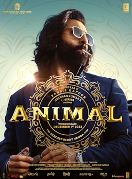

Directed by Sandeep Reddy Vanga
Screenplay by Sandeep Reddy Vanga
Pranay Reddy Vanga
Suresh Bandaru
Story by Sandeep Reddy Vanga
Dialogues by Saurabh Gupta
Budget ₹100 crore[2][3]
Box office est.₹917.82 crore[4]
Animal is a 2023 Indian Hindi-language action drama film co-written, directed and edited by sandeep reddy vanga and produced by T-Series Films, Bhadrakali Pictures and Cine1 Studios . The film stars Ranbir Kapoor,samantha Anil Kapoor, Bobby Deol, Rashmika Mandanna and Triptii Dimri
. In the film, Ranvijay Singh learns about an assassination attempt on his father and sets out on a path of vengeance and destruction.
The film was officially announced in January 2021
. Principal photography began in April 2022 and was wrapped by April 2023, with cinematography by Amit Roy. The film's soundtrack album was composed by Pritam, JAM8, Vishal Mishra, Jaani, Manan Bhardwaj, Shreyas Puranik, Ashim Kemson and Harshavardhan Rameshwar. With a runtime of 201 minutes, Animal is one of the longest Indian films ever made. It was initially set for an August 2023 release but was postponed due to post-production work.
Ranvijay "Vijay" Singh is the son of Balbir Singh, a powerful Delhi-based industrialist. Despite Balbir being a strict father, Vijay's love for his father is deep. Balbir doesn't know about his son's devotion to him due to his busy schedule, which also keeps him from spending time with his family.
One day, Balbir expels Vijay to a boarding school in the USA when Vijay threatens the bullies of his elder sister Reet with an AK-47. Vijay finishes his education and returns home after several years. During Balbir's birthday party, Vijay gets into an argument with his brother-in-law, Varun, prompting Balbir to expel him from the house again. Vijay marries his childhood girlfriend, Geetanjali, and the couple cuts ties with their families and moves to the USA.